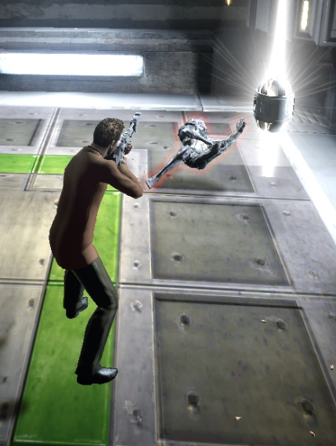

Haz derribado a varios enemigos pero
esto no termina aca, hay mas para hacer,
puedes seguir tu camino hacia otro nodo
sin reconfigurar los parametros de este
o reconfigurar y recuperar el nodo actual.
siguiente nodo
reconfigurar